D1
11月7日
香港机场 赫尔辛基
住宿：飞机上
里程/耗时：国际航班 / 约14h 15m
搭乘芬兰航空豪华客机夜航，开启极地序章
极地冰火之歌 · 瓦特纳冰川水晶蓝冰洞 · 斯奈山魔幻秘境 · 欧若拉极光探索之旅
点击地图可放大查看高清细节
11月7日
住宿：飞机上
里程/耗时：国际航班 / 约14h 15m
搭乘芬兰航空豪华客机夜航，开启极地序章
11月8日
住宿：Center Hotels Arnarhvoll
里程/耗时：约50km / 约45min
大教堂、太阳航海者、哈帕音乐厅、托宁湖漫步
11月9日
住宿：Hótel Bifröst
里程/耗时：约260km / 约3.5h
国家公园、草帽山神峰、布迪尔黑教堂、阿尔纳斯塔皮
11月10日
住宿：The Greenhouse Hotel
里程/耗时：约240km / 约3.5h
辛格维利尔裂缝、蓝色秘境瀑布、间歇泉、黄金瀑布
11月11日
住宿：Fosshotel Nupar
里程/耗时：约280km / 约4h
塞里雅兰瀑布、斯科加瀑布、迪霍拉里海角、雷尼斯黑沙滩
11月12日
住宿：Fosshotel Nupar
里程/耗时：约220km / 约3h
杰古沙龙冰河湖浮冰、超级吉普探秘水晶蓝冰洞、钻石沙滩
11月13日
住宿：Aurora Hotel at Airport
里程/耗时：约320km / 约4.5h
埃尔德熔岩苔原、羽毛大峡谷、蓝湖顶级地热温泉疗愈
11月14日
住宿：飞机上
里程/耗时：国际航班 / 约3h 20m
步行至航站楼办理登机，07:30乘机离开冰岛，中转候机
11月15日
住宿：飞机上
里程/耗时：国际航班 / 约11h 20m
AY099起飞返港，19:05降落香港机场T1，圆满落幕
出发当天请自行前往香港国际机场一号客运大楼（T1），在芬兰航空值机柜台办理登机手续与行李托运（请备好护照原件及有效申根签证）。完成安全检查与海关边检后前往指定登机口候机，随后搭乘芬兰航空AY100豪华客机飞往赫尔辛基，开启极地冰火奇境之旅。
芬兰万塔机场航站楼以大面积玻璃、通透挑高的空间和简洁线条，呈现明亮舒展的现代设计。中庭点缀绿植，周围分布着商店与餐饮空间；旅客可以在航站楼自由漫步、浏览免税商品、选购北欧伴手礼，也可以找座位休息用餐。
航班平稳降落芬兰赫尔辛基万塔国际机场后，持护照办理申根入境手续。候机期间可在大厅自由漫步，体验芬兰极简设计与免税空间，之后转乘芬兰航空AY993飞往冰岛。抵达凯夫拉维克国际机场（KEF）并提取行李后，由领队在到达大厅接机，乘坐专车前往雷克雅未克。抵达市区后漫步游览【雷克雅未克大教堂】、【太阳航海者】、【哈帕音乐厅】和【托宁湖畔】，晚餐后入住酒店休整。
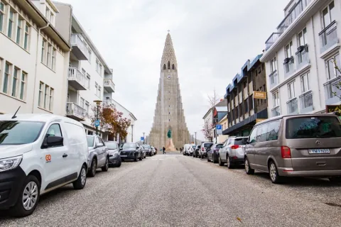
城市地标 · 建筑艺术雷克雅未克大教堂位于首都制高点，灰白外观取意于冰岛玄武岩柱与冰川形态。搭乘电梯登上约73米高的钟楼观景台，可俯瞰彩色铁皮屋顶、大西洋与远处雪峰。雪色映衬下街区层次清晰；建筑远望如巨型管风琴，构成城市天际线的醒目标志。
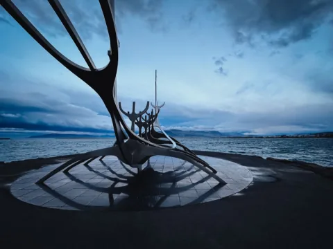
维京精神 · 雕塑艺术太阳航海者是雕塑家阿尔纳松创作的精钢船形雕塑，立于雷克雅未克海滨，船首朝向大西洋，寄托着人类对未知、自由与光明的向往。作品以轻盈的维京船骨架线条呈现，海面与远处埃斯亚山相映；日落或晨光下，钢面更显清朗。
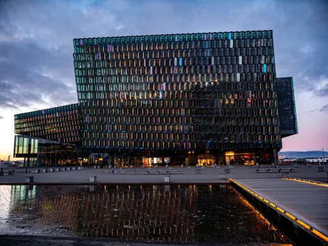
光影建筑 · 艺术殿堂哈帕音乐厅坐落于雷克雅未克旧港旁，外墙由上千块不规则双层玻璃砖拼成，灵感来自玄武岩结晶与极光。冬日光线和海面反射让玻璃呈现不同色泽，室内中庭也有层叠光影。这里是冰岛交响乐团的演出场地，也是现代建筑地标。
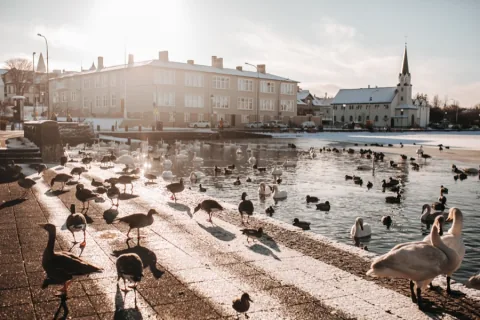
城市明珠 · 天鹅栖息托宁湖位于雷克雅未克市中心，周边可见议会大厦、市政厅与色彩明快的小木屋。冬季湖面大部结冰，地热暖流汇入的一角常年不冻，吸引大天鹅、野鸭和海鸥栖息游弋，因此被称作“鸭子湖”。沿湖漫步，可感受首都日常生活的悠闲气息。
在酒店享用北欧早餐后，沿1号环岛公路向西北行驶，穿越海底隧道前往有“冰岛缩影”之称的【斯奈山半岛】。途中探访【布迪尔黑教堂】，在荒原雪地中拍照；随后前往【阿尔纳斯塔皮小镇】，漫步黑玄武岩海蚀崖，并自理午餐。之后深入【斯奈山国家公园】，远眺【斯奈菲尔雪山】，再前往【草帽山】和【草帽山瀑布】，捕捉冬日天光下的魔幻倒影。傍晚乘车入住无光害荒原带的Hótel Bifröst，晚餐自理，夜间可在酒店周边守候北极光。
 冰岛缩影 · 地心入口
冰岛缩影 · 地心入口
斯奈山国家公园环绕斯奈菲尔火山与冰川，火山、熔岩、冰川和海岸悬崖等地貌集中呈现，常被称为“冰岛缩影”。儒勒·凡尔纳曾在《地心游记》中把这里写成通往地心的入口。冬日雪原与黑色玄武岩海岸相映，展现半岛独特地貌。
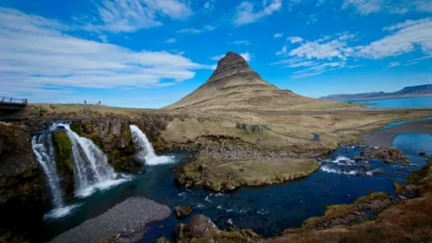
摄影圣殿 · 权力的游戏草帽山位于格伦达菲厄泽附近，山体因轮廓似草帽得名，是斯奈山半岛的代表景观，也曾在《权力的游戏》中作为“箭头山”出现。山脚瀑布与山峰形成经典构图；冬夜若遇绿色极光，山峰与水面倒影相映，更添梦幻气氛，也构成半岛经典摄影画面。
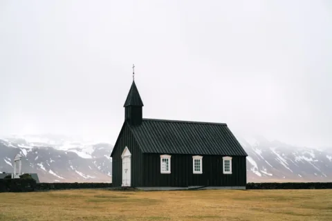
极简美学 · 孤独信仰布迪尔黑教堂坐落在斯奈山半岛的荒原上，黑色木墙与白色门窗醒目，周围是熔岩地、草甸与远处雪山。作为冰岛古老的木教堂之一，它以简洁建筑映衬辽阔海岸，呈现安静克制的北欧气质，也成为摄影师喜爱的取景点；黑白反差让画面格外醒目。
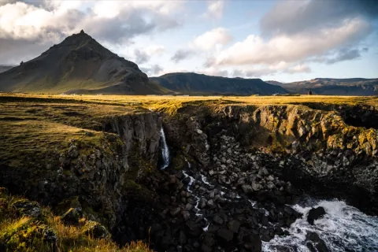
海蚀巨拱 · 渔港诗意阿尔纳斯塔皮位于斯奈山半岛南岸，曾是繁盛的维京渔港。沿海步道串联天然海蚀拱门Gatklettur与玄武岩崖壁，可观察大西洋海浪和三趾鸥。冬季巨浪拍击黑色岩岸，溅起雪白浪花，远处红顶屋舍与雪峰点缀海湾，呈现粗犷的北欧海岸景色。
早餐后出发前往黄金圈，游览世界文化遗产【辛格维利尔国家公园】，漫步美洲与欧亚大陆板块交界的大裂缝。随后探访【蓝色秘境瀑布】，欣赏荧光冰蓝；午餐可在Friðheimar地热温室农场自理。接着游览【盖歇尔间歇泉】，观看史托克间歇泉数十米沸水蓝泡喷发，再造访【黄金瀑布】，感受冰瀑飞流与水雾景致，最后探访【凯瑞斯火山口湖】，俯瞰碧绿湖水与红褐色火山口岩壁。傍晚入住The Greenhouse Hotel，晚餐自理，夜间可守候极光。
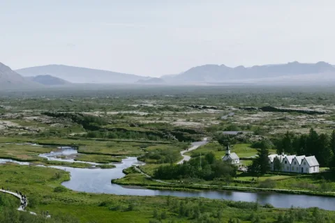
世界遗产 · 板块大裂缝辛格维利尔国家公园兼具地质景观与冰岛历史。北美板块与欧亚板块在此分离，形成阿尔曼纳大裂缝；公元930年，冰岛早期议会阿尔辛在此召开。沿步道可观察裂谷与熔岩地貌，自然力量和文明历史在此交汇，是黄金圈的重要一站。
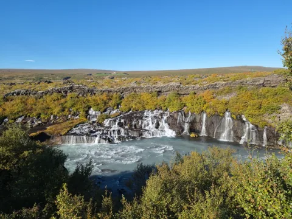
幽蓝奇景 · 冰川融水蓝色秘境瀑布Brúarfoss藏在黄金圈灌木丛中，冰川融水从半圆形黑色岩石裂隙间分成数十道银白细流，汇入中央峡谷。水色在矿物质与光线映照下呈幽蓝或薄荷色，冬季白雪衬着清澈水流，形成独特的蓝色景观，沿河还可看到层层汇流。
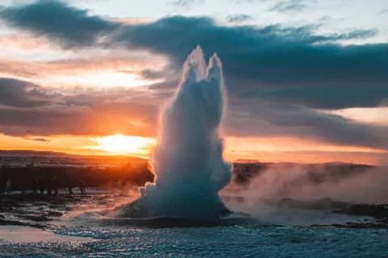
地热沸腾 · 冲天水柱盖歇尔地热区是“间歇泉”一词的来源地，地表蒸汽缭绕，可听见沸水在地下涌动。区内较活跃的史托克间歇泉通常每隔5至8分钟喷发：水面先下陷再鼓起半透明蓝色水泡，随后热水柱升至约20至30米，化为寒冬中的白雾，喷发时伴随巨响。
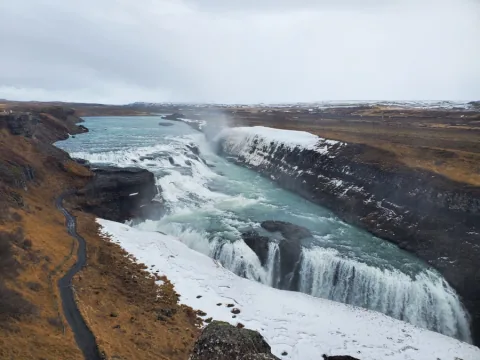
双层阶梯 · 咆哮冰河黄金瀑布由白河从朗格冰川奔涌而来，水流分两层跌入约32米深的峡谷，轰鸣声在观景处清晰可闻。冬日部分岩面结冰，激流与冰挂相映；晴天时飞溅水雾偶尔映出彩虹，站在崖边可感受磅礴水势与凉意扑面。激流尽显自然原始野性。
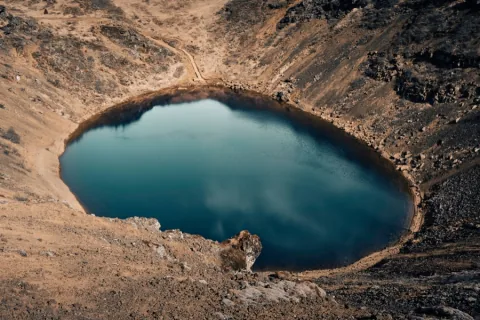
红岩碧水 · 地心之眼凯瑞斯火山口湖约有3000年历史，火山口深约55米，近椭圆形的斜坡呈红褐色，局部覆有积雪与苔藓，底部湖水幽绿。沿环形步道从高处俯瞰，红岩、白雪与碧水形成强烈对比，也能观察火山口完整的漏斗状地形。湖水宛如镶嵌在岩壁间的绿色宝石。
早餐后离开温室酒店，沿1号公路驶入冰岛南部海岸。先游览【塞里雅兰瀑布】，欣赏晶莹剔透的冰挂水幕；再前往【斯科加瀑布】，天气晴好时可在浓密水雾中寻找双道彩虹。随后抵达维克小镇自理午餐，再登上【迪霍拉里海角观景台】，俯瞰天然玄武岩海蚀巨拱与无垠黑色海岸。之后前往【雷尼斯黑沙滩】，观赏玄武岩石柱长廊，并与海浪保持安全距离；最后登上山坡远眺【维克红顶教堂】。傍晚穿越辽阔熔岩原野，入住Fosshotel Nupar，晚餐自理，夜间可在客房落地窗前或空旷雪原守候极光。
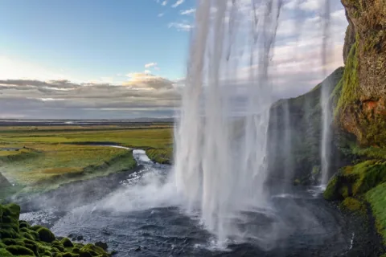
水帘洞天 · 空灵冰挂塞里雅兰瀑布高约60米，水流沿岩壁垂落，瀑布后方藏有深邃天然岩洞。天气与路面允许、没有严重结冰时，可沿湿滑小径绕到水幕后方，从洞内向外看瀑布与大西洋平原。冬季水雾易在岩石和草地凝成冰挂，游览需留意开放情况。
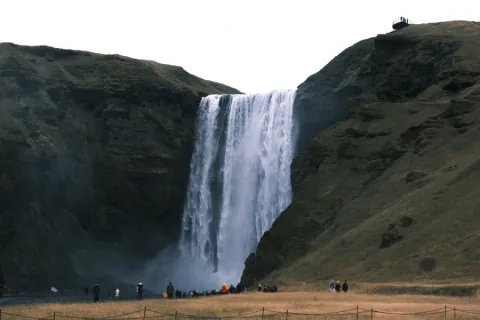
彩虹之瀑 · 维京传说斯科加瀑布宽约25米、高约60米，水流从平整悬崖如白色幕布般倾泻；丰沛水雾在晴天常映出单道或双道彩虹。瀑布旁近500级台阶通往顶部观景台，可俯瞰南岸平原。民间也流传维京海盗曾在瀑布后的洞穴藏下宝箱，水声震彻山谷，气势恢宏。
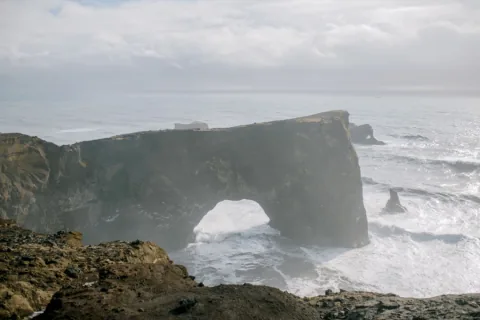
主岛极南 · 天然双拱迪霍拉里海角位于冰岛主岛最南端，由古火山形成。海岬顶端有建于1927年的白色灯塔，天然双孔海蚀拱门向大西洋延伸。站在狂风呼啸的观景处，西望黑色熔岩海岸，北看米达尔斯冰川，东览雷尼斯黑沙滩，视野开阔辽远。
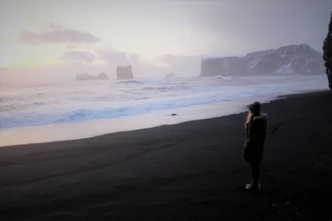
国家地理盛赞 · 黑暗哥特雷尼斯黑沙滩由火山熔岩碎屑沉积而成，沙粒细腻纯黑，与白色浪花形成鲜明反差。岸边整齐矗立着玄武岩柱群，海中的雷尼斯德兰加岩柱像凝固的维京巨怪。这里曾获《国家地理》评为全球最美非热带海滩之一，但“疯狗浪”暗涌多变，令人敬畏。
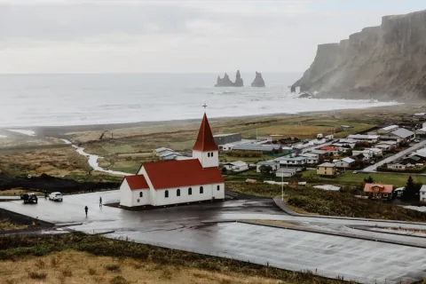
南岸明信片 · 守护温情维克教堂静立于小镇后方山坡，白墙红瓦在荒原与黑色海岸衬托下格外醒目。站在教堂前可俯瞰彩顶木屋、远处雷尼斯黑沙滩，以及海中的玄武岩海蚀柱。冬日这抹红色如温暖灯塔守望小镇，构成冰岛南岸经典的明信片风景。山坡视野开阔，可同时欣赏小镇与海岸。
在雪峰日出的晨光中享用早餐后，启程前往欧洲最大的冰川区域——瓦特纳冰川保护区。抵达【杰古沙龙冰河湖】后，伫立湖畔欣赏由古老降雪层层挤压形成的幽蓝浮冰；午餐可在冰河湖接待中心自理。之后与专业高山向导会合，换乘轮胎高逾一人的超级越野巨轮吉普（Super Jeep），驶入无垠冰原腹地，展开【蓝冰洞探秘】。听从向导指导穿戴专业头盔与冰爪，步入深邃魔幻的天然水晶蓝冰宫。活动结束后返回冰河湖出发点，再漫步【钻石沙滩】，欣赏黑色沙滩上被海浪打磨得晶莹剔透的碎冰。傍晚乘专车返回Fosshotel Nupar，晚餐自理，可在周边静候极光。
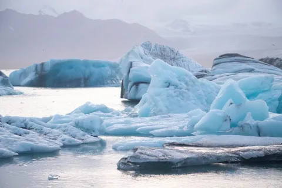
万年冰川 · 幽蓝浮冰杰古沙龙冰河湖由瓦特纳冰原边缘消融崩塌形成，面积约18平方公里，湖面漂浮着蓝白色大型冰块，偶见黑色火山灰纹理。浮冰随水流缓缓移动、碰撞，有时能看见海豹探头。湖面开阔宁静，景色会随冰块与光线变化，是南岸代表性冰川景观。
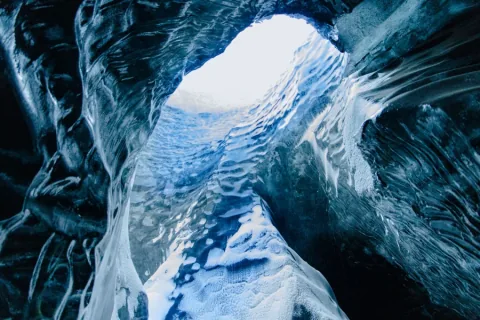
季节限定 · 水晶宫殿水晶蓝冰洞是瓦特纳冰川深处的季节性景观，仅在严冬（11月至次年3月）冰况稳定时，由专业向导带领进入。冰层经长年挤压变得致密，阳光穿透后呈现深浅不一的宝石蓝，洞顶纹理如凝固波浪。冰况逐年变化，需按当季向导评估安排，才能安全探访。
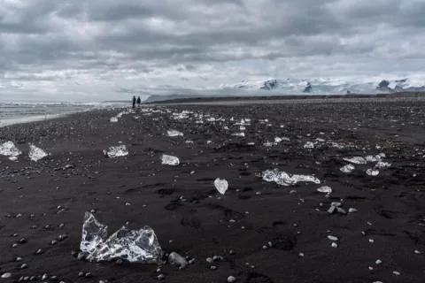
黑沙碎晶 · 璀璨诗篇钻石沙滩位于杰古沙龙冰河湖出海口，浮冰随洋流漂向大西洋，经海浪反复冲刷打磨后，又被推回黑色火山沙滩。透明冰块形态各异、边缘圆润，在冬日低悬阳光下闪着钻石般的光。黑沙与冰晶相映，景象随潮汐和冰量不断变化。
在酒店享用早餐并整理行李后，乘专车沿1号公路西行返程。途中于【埃尔德熔岩苔原地带】驻足观景，欣赏大地沉淀出的苍茫绿毯；随后轻徒步探索【羽毛大峡谷】，沿步道俯瞰曲折幽深的碧水深谷。午餐在沿途风情小镇自理，之后继续穿越雷克雅内斯半岛的火山、地热与熔岩地貌。抵达【蓝湖温泉】后更衣入汤，浸润奶蓝色矿物温泉，敷上纯白硅泥面膜并品尝特饮，舒缓数日旅途身心（已预约黄金入场场次）。晚餐自理，也可选择在蓝湖畔的Lava熔岩餐厅用餐；之后前往凯夫拉维克机场，入住步行数分钟可达的机场极光酒店。
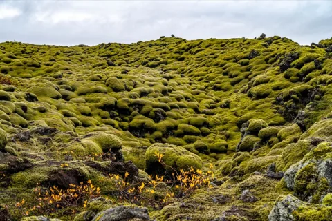
远古遗迹 · 地球绿毯埃尔德熔岩苔原是1783年拉基火山大喷发留下的遗迹，黑色熔岩被历经数百年生长的灰绿色高山苔藓覆盖，地表起伏绵延数十公里。冬季初雪落在苔原褶皱间，形成绿白相间的景色。苔藓十分脆弱，脚印多年难以消失，请在指定观景台停留。
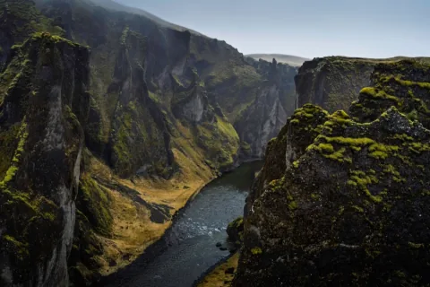
两百万年地貌 · 灵动空灵羽毛峡谷长约2公里、深约100米，形成于约两百万年前的冰河时代末期。冰川融水切割出蜿蜒石灰岩绝壁，谷底流过清澈的Fjaðrá河。冬季峭壁挂霜，从观景处俯瞰，峡谷线条如羽毛般舒展；这里也曾是贾斯汀·比伯经典MV的取景地。
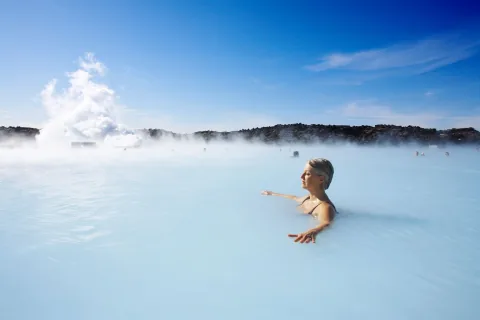
地热奇迹 · 极致疗愈蓝湖温泉位于雷克雅内斯半岛的黑色熔岩之间，泉水含硅土、海藻与天然矿物盐，阳光下呈柔和乳蓝色，水温常年约37至40摄氏度。冬日空气清冷，温泉升起白雾，形成冰火交融的体验；现场还可享受白硅泥面膜与特调饮品。
从机场酒店退房后，步行约5分钟即可进入凯夫拉维克机场航站楼。由领队在机场购买简餐作为早餐，随后前往海关退税柜台办理退税核验，并完成行李托运与登机手续。搭乘芬兰航空AY992飞离冰岛，可从舷窗最后眺望白雪皑皑的极地荒原；抵达芬兰赫尔辛基万塔机场后，中转时间约11小时55分。期间可在机场免税店选购北欧伴手礼，或前往国际贵宾候机厅休息、洗漱，之后前往登机口准备转机。
搭乘芬兰航空AY099豪华客机从赫尔辛基起飞返港，航班平稳降落香港国际机场一号客运大楼（T1）后，提取托运行李并办理入境手续。行程至此结束，大家互道珍重，各自返回温馨家中。
冰岛虽然地广人稀，但4G/5G通信基站建设十分完备，环岛公路及绝大部分景点均有良好的移动网络信号覆盖。为保障旅途中工作联络及与家人报平安顺畅，建议各位贵宾根据个人使用偏好选择以下三种网络解决方案之一：
冰岛自然景观宏伟纯粹，但大自然的原始野性同样蕴藏着风险。为了确保全团贵宾的人身与财产安全，请务必严格遵守以下黄金安全法则：
欧若拉（Aurora）是极夜穹顶上最壮丽的天文神迹，也是本次冰岛之旅最为期待的灵魂高潮。为了让各位贵宾科学追光、不错过任何一次与极光女神相遇的奇迹时刻，特此奉上极光探索全指南：